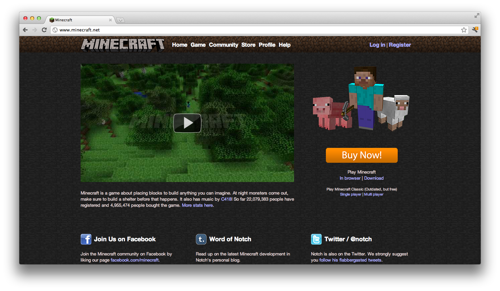
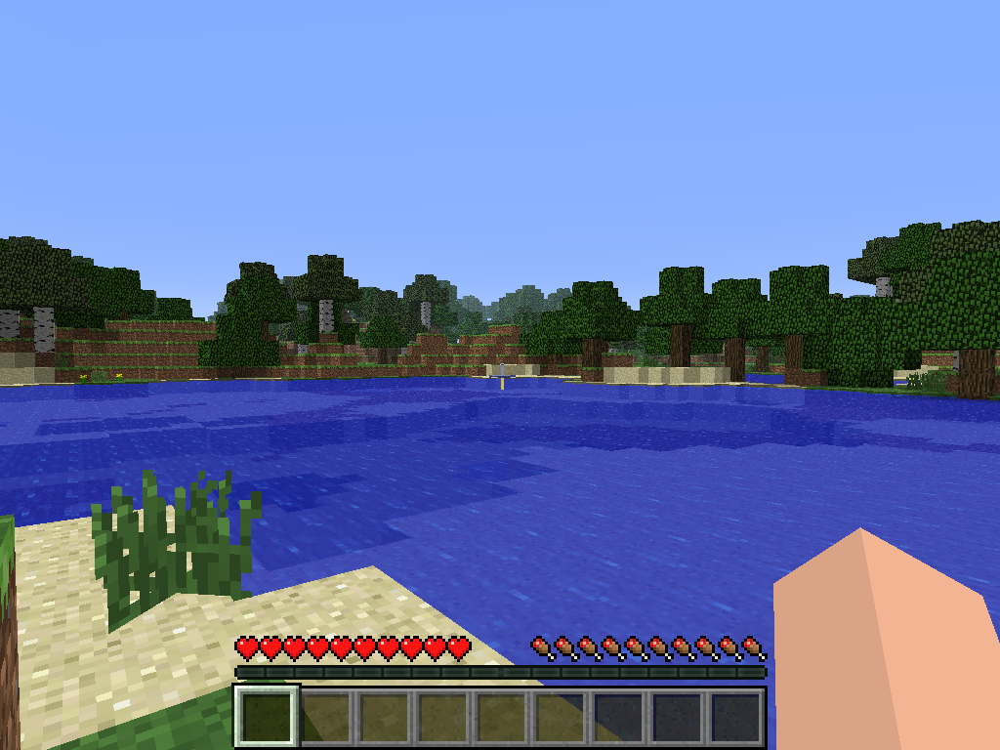
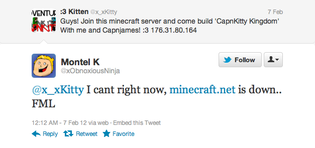
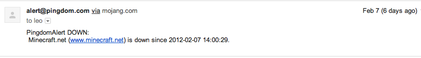
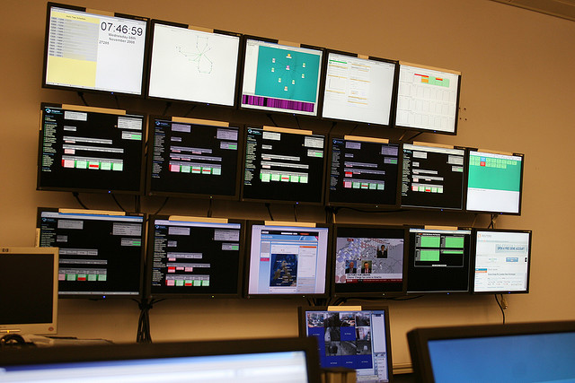
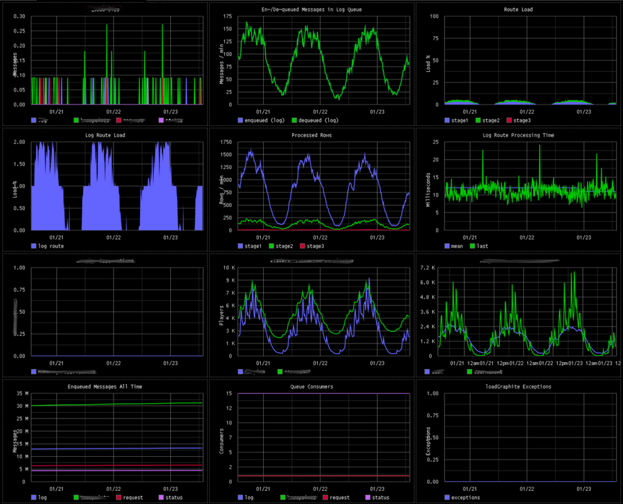
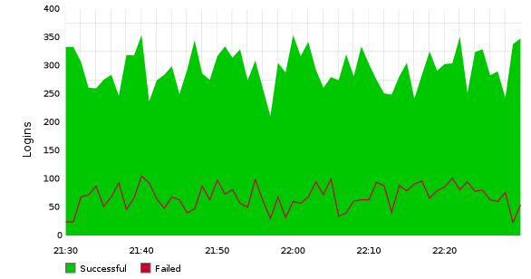
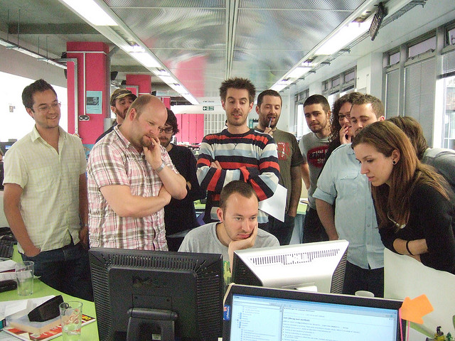

Speaker
Leonard Axelsson
- Developer/Operations at Mojang
- Co-Founder of SweGuG
- Speaker at Dyncon, Jfokus, Javaforum and others




What's the state of your application?
I'd like to start by asking you to think about what you know about the state of your application. What's happening? What are your users doing? How do you get information about it?

you might get it from a user, sadly not that uncommon
or your
boss complaining
you might even have your pointy haired boss come over to bash his hand into your desk and start shouting about a problem
Hopefully an alarm

or in most cases, you get an alarm from your monitoring system telling you that your site is down.
Is that enough?
now, my question to you is: is that really enough? Isn't that a bit late to know what's happening in the application?

default operations with green and red buttons for when things are working and not. cpu, memory, 200 codes from web apps

graphs over realtime data of application centric information such as logins, transactions messages added to a queue
The difference
diff kinds, alarms vs application centric data and graphs -> meaning
Application metrics

things like: logins/minute or payment transactions. Tells you about your application.
Getting to know your app
brain pattern matching, see trends, learn about the application and how it behaves. Looking at the data every morning, what my users are doing.
The watercooler effect

app metrics -> other people are curious. pretty -> even more people are curious. even biz that asks what something app centric means
A common language
the graphs acts as a facility to create a common ground. As people from different parts of the organization looks at it. example: perf issue, apparent by graph. Esp since he already knows it.
but
I'm a developer
you should know your application. To know it -> put through its motions and see what happens.
Start early
- finding your vital metrics takes time
going live is to late, won't watch appcentric data and won't know how the app works. Ops keep stuff running and probably won't learn it, at least not very quickly. You need to add metrics early to learn the app and to learn what metrics are vital to YOUR application.
Requirements in development
- do load testing
- (preferrably) involvement in production
if you have users, you should see what happens when the app is run by those users. If you have more than 10 users, you should watch vital app metrics, your understanding of the app probably won't be enough.
A tool
use whatever you finds works the best for you - there's no silver bullets
Graphite

Easy as setting up a python webapp, All OpenSource, Made to scale. Been extremely easy to use with a minimal amount of configuration.
"Hello metric"
(Python)
import time
import socket
def collect_metric(name, value, timestamp):
sock = socket.socket()
sock.connect( ("localhost", 2003) )
sock.send("%s %d %d\n" % (name, value, timestamp))
sock.close()
def now():
int(time.time())
collect_metric("meaning.of.life", 42, now())graphite demo
Apply a function, nonNegativeDerivative, talk about composability, how different data can be combined easily
looking at application metrics means
you will learn
what to watch
Get to know your application
today
Attributions
Images
Big Brother Noc Concerns Blunt tools Gather round Thirst Confidence Behaviour Design Testing Start monitoring Demo Time
Thanks
The team at Entraction (IGT)
Mårten Gustafson
Ville Svärd (Agical)